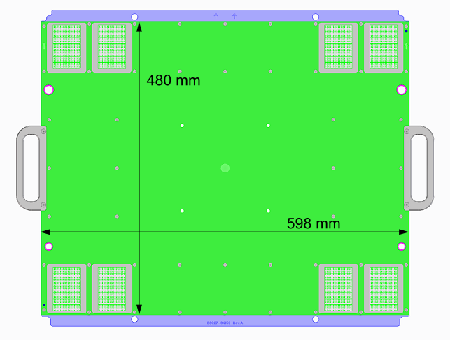
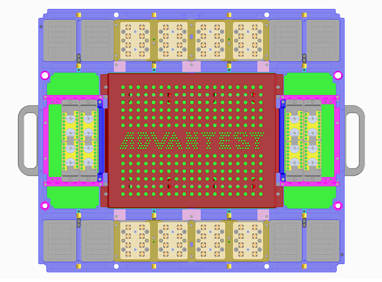
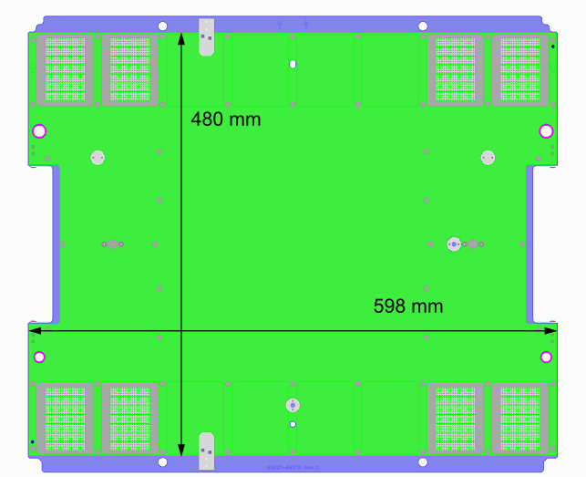
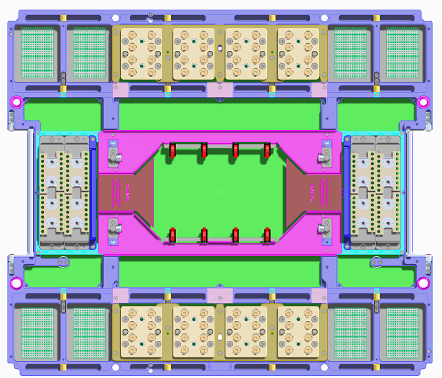

Wave Scale Millimeter PCB space
The ruling advantage of the Wave Scale Millimeter solution is the gain of real estate on the DUT board.
The Wave Scale millimeter DUT board is not compatible with the standard V93000 DUT Board. The Wave Scale Millimeter DUT board provides a larger PCB space for DUT board circuitry.
For the sake of readability, metric figures are given here only.
This topic shall give you an impression on the PCB dimensions.
Top side of Wave Scale Millimeter DUT board

Bottom side of the Wave Scale Millimeter DUT board

For schematic drawing of the Final test DUT board refer to drawing E8027-96550 in Wave Scale MM PCB layout and stiffener info for final test
Top side of Wave Scale Millimeter Direct-probe DUT board

Bottom side of the Wave Scale Millimeter Direct-probe DUT board

For schematic drawing of the Direct-probe DUT board refer to drawing E8027-96570 in Wave Scale MM PCB layout and stiffener info for direct-probe.
Functional changes
- Introduced in SmarTest 8.3.0